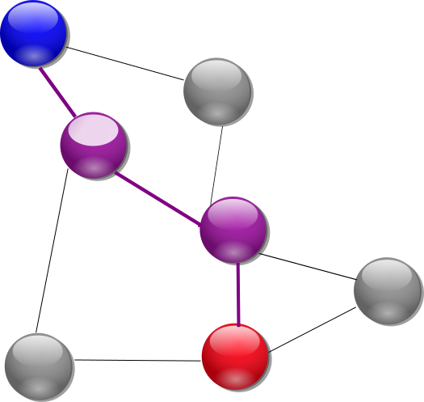
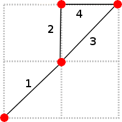
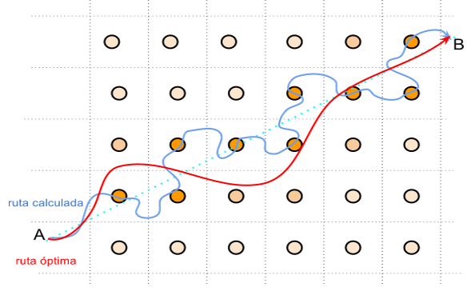
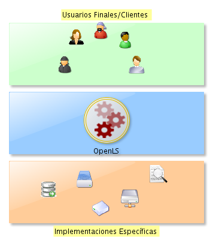
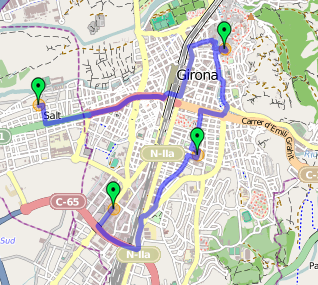

Taller de Routing
Jornadas SIG Libre de Girona 2012
María Arias de Reyna Domínguez @delawen
- Breve Introducción Teórica
- Cálculo de rutas en entornos reales
- pgRouting
- Shooting Star
- OSRM
- ¿Qué es OpenLS?
- Cómo implementar OpenLS
- GoFleetLS
- Conclusiones
- Breve Introducción Teórica
- Cálculo de rutas en entornos reales
- pgRouting
- Shooting Star
- OSRM
- ¿Qué es OpenLS?
- Cómo implementar OpenLS
- GoFleetLS
- Conclusiones
¿Qué es el Routing/Cálculo de rutas?
Dado un conjunto de viales y sus relaciones, el cálculo de rutas
nos permite conocer el camino "más corto" entre dos puntos.

El coste del camino determina cual es el camino más corto. Puede ser tiempo,
longitud o cualquier otra variable que se necesite.
¿Cómo se calcula?
Tradicional y teóricamente la forma de calcular la ruta más corta entre
dos puntos es mediante el algoritmo de Dijkstra.

Se va avanzando nodo a nodo siempre por el camino que lleve menos coste.
Está demostrado matemáticamente que siempre encuentra la ruta óptima
(la de menor coste).
¿Dijkstra entonces?
Dijstra presenta un problema fundamental: tarda mucho.
O(|E| + |V| log(|V|))
Para situarnos:
una ciudad como Sevilla puede tener cerca de 30.000 viales.
Aún cuando tardara un milisegundo en procesar cada vial y otro milisegundo
en procesar cada cruce, si queremos calcular una ruta atraviese la ciudad nos quedaría:
O(|30.000| + |30.000| log(|30.000|))~ 300.000 ms ~ 5 minutos
Y eso usando sólo los datos de una ciudad media.
Por suerte, existen otros algoritmos que podemos utilizar.
El algoritmo A*(a-star o a-estrella):
Dijkstra con heurísticas.
Supongamos que en vez de seleccionar el nodo que lleva
menor coste, seleccionamos el que lleva menor coste y creemos que se acerca más al
destino.

Está demostrado que si la heurística es menor o igual que el coste que sería en realidad, A* devuelve una solución óptima.
El algoritmo A* frente a Dijstra
A* es mucho más rápido
- Breve Introducción Teórica
- Cálculo de rutas en entornos reales
- pgRouting
- Shooting Star
- OSRM
- ¿Qué es OpenLS?
- Cómo implementar OpenLS
- GoFleetLS
- Conclusiones
Del modelo teórico de datos a la realidad
- Diferentes tipos de vías (velocidades)
- Diferentes tipos de vehículos
- Tráfico
- Señales de tráfico
- Giros prohibidos
- Cambios estacionales
- Imprevistos (obras, accidentes,...)
Aplicaciones en tiempo real
- Tiempo de respuesta viable
- Recálculo de la ruta
- Rutas con varios destinos (TSP)
- Aplicaciones móviles (hardware limitado)
- Breve Introducción Teórica
- Cálculo de rutas en entornos reales
- pgRouting
- Shooting Star
- OSRM
- ¿Qué es OpenLS?
- Cómo implementar OpenLS
- GoFleetLS
- Conclusiones
Qué es pgRouting
Es una extensión de PostGIS
que a su vez es una extensión de postgreSQL
Dado un tipo de dato (tabla) genérica, provee varias funciones que permiten realizar el cálculo de
rutas según nuestras necesidades.
Instalación
En una Debian y derivados es fácil: hay un ppa de Ubuntu:
https://launchpad.net/~georepublic/+archive/pgrouting
https://launchpad.net/~georepublic/+archive/pgrouting-testing
sudo add-apt-repository ppa:georepublic/pgrouting
sudo apt-get update
sudo apt-get install pgrouting
Esto te instala también postgis y postgreSQL por dependencias.
Configuración
La configuración es la misma que para usar postgreSQL:
$ sudo su
#echo "host all all 127.0.0.1/32 trust" >> /etc/postgresql/8.4/main/pg_hba.conf
#service postgresql restart
#exit
Ahora tenemos permiso para acceder desde local y desde cualquier usuario a la basede datos.
$ createuser -U postgres -h localhost girona
¿Será el nuevo rol un superusuario? (s/n) s
Y ya tenemos un usuario para hacer nuestras pruebas.
Instalación de herramientas complementarias
Si vamos a utilizar OSM,es importante instalar también:
sudo apt-get install osm2pgrouting
para convertir datos OSM a pgrouting
Si queremos un administrador GUI de postgreSQL:
sudo apt-get install pgadmin3
Tipo de Dato
- ID: (NOT NULL) Serial
- the_geom: geometry NOT NULL
- cost double precision DEFAULT (-1) NOT NULL
- reverse_cost double precision DEFAULT (-1) NOT NULL
- x1 double precision NOT NULL
- y1 double precision NOT NULL
- x2 double precision NOT NULL
- y2 double precision NOT NULL
- source integer
- target integer
Tipo de Dato
- ID: (NOT NULL) Serial
- the_geom: geometry NOT NULL
- cost double precision DEFAULT (-1) NOT NULL
- reverse_cost double precision DEFAULT (-1) NOT NULL
- x1 double precision NOT NULL
- y1 double precision NOT NULL
- x2 double precision NOT NULL
- y1 double precision NOT NULL
- source integer
- target integer
Tipo de Dato
- ID: (NOT NULL) Serial
- the_geom: geometry NOT NULL
- cost double precision DEFAULT (-1) NOT NULL
- reverse_cost double precision DEFAULT (-1) NOT NULL
- x1 double precision NOT NULL
- y1 double precision NOT NULL
- x2 double precision NOT NULL
- y1 double precision NOT NULL
- source integer
- target integer
- to_cost double precision DEFAULT (0) NOT NULL
- rule text
Funciones
Dijkstra
A*
Shooting Star
A* con restricciones de giros.
Traveling Salesperson Problem
Problema del viajante,clásico. Aborda una solución sencilla.
Driving Distance calculation
No devuelve la geometría, sólo el tiempo
Funciones
Dijkstra
A*
Shooting Star
A* con restricciones de giros.
Traveling Salesperson Problem
Problema del viajante,clásico. Aborda una solución sencilla.
Driving Distance calculation
No devuelve la geometría, sólo el tiempo
Ejemplo rápido de Dijkstra
Creamos una base de datos para nuestras pruebas
createdb -U girona -h localhost --template="template_postgis" girona
Y la dotamos de la extensión pgRouting
--createlang -U girona -h localhost plpgsql girona
psql -U girona -h localhost -d girona -f /usr/share/postlbs/routing_core.sql
psql -U girona -h localhost -d girona -f /usr/share/postlbs/routing_core_wrappers.sql
psql -U girona -h localhost -d girona -f /usr/share/postlbs/routing_topology.sql
Ejemplo rápido de Dijkstra
Creamos la tabla que contendrá los datos:
psql -U girona
#CREATE TABLE routing_simple(
gid serial,
length double precision,
PRIMARY KEY (gid));
#select AddGeometryColumn('routing_simple', 'the_geom', 4326, 'LINESTRING', 2);
Ejemplo rápido de Dijkstra
Metemos datos simples:
# INSERT INTO routing_simple(gid, the_geom) values
(1, st_setsrid(st_geomfromtext('LINESTRING(0 0, 1 1)'),4326)),
(2, st_setsrid(st_geomfromtext('LINESTRING(1 1, 1 2)'),4326)),
(3, st_setsrid(st_geomfromtext('LINESTRING(1 1, 2 2)'),4326)),
(4, st_setsrid(st_geomfromtext('LINESTRING(1 2, 2 2)'),4326));

Actualizamos el coste a la longitud de la geometría:
# UPDATE routing_simple set length = st_length(the_geom);
Ejemplo rápido de Dijkstra
Establecemos las relaciones source-target:
# ALTER TABLE routing_simple ADD COLUMN "source" integer;
ALTER TABLE routing_simple ADD COLUMN "target" integer;
SELECT assign_vertex_id('routing_simple', 0.00001, 'the_geom', 'gid');
Y ya tenemos todo listo para hacer consultas:
# select * from routing_simple;
Ejemplo rápido:
# select * from dijkstra_sp( table text,
source_id integer,
target_id integer);
Que en nuestro caso quedaría:
# select * from dijkstra_sp( 'routing_simple',1,4);
- Breve Introducción Teórica
- Cálculo de rutas en entornos reales
- pgRouting
- Shooting Star
- OSRM
- ¿Qué es OpenLS?
- Cómo implementar OpenLS
- GoFleetLS
- Conclusiones
Shooting Star necesita todos los datos completos
ALTER TABLE routing_simple ADD COLUMN reverse_cost double precision;
ALTER TABLE routing_simple ADD COLUMN to_cost double precision;
ALTER TABLE routing_simple ADD COLUMN rule text;
ALTER TABLE routing_simple ADD COLUMN x1 double precision;
ALTER TABLE routing_simple ADD COLUMN y1 double precision;
ALTER TABLE routing_simple ADD COLUMN x2 double precision;
ALTER TABLE routing_simple ADD COLUMN y2 double precision;
UPDATE routing_simple SET reverse_cost = length;
UPDATE routing_simple SET x1 = x(ST_startpoint(the_geom));
UPDATE routing_simple SET y1 = y(ST_startpoint(the_geom));
UPDATE routing_simple SET x2 = x(ST_endpoint(the_geom));
UPDATE routing_simple SET y2 = y(ST_endpoint(the_geom));
UPDATE routing_simple SET to_cost = 'Infinity'
Ejemplo normal
SELECT shootingstar_sp('routing_simple', 1, 3, 0.1, 'length', true, true);
Añadimos una restricción de giro;
UPDATE routing_simple SET rule = '1' WHERE gid = 3;
Ejemplo con restricción de giro
SELECT shootingstar_sp('routing_simple', 1, 3, 0.1, 'length', true, true);
Entornos Reales
Uso de funciones y vistas para generar perfiles
to_cost dependiendo del tipo de intersección
length dependiendo del tipo de vía
Posible incorporación de tráfico en tiempo real
Ejemplo Real
--createlang -U gofleetls -h localhost plpgsql gofleetls
psql -U gofleetls -h localhost -f /usr/share/postlbs/routing_core.sql
psql -U gofleetls -h localhost -f /usr/share/postlbs/routing_core_wrappers.sql
psql -U gofleetls -h localhost -f /usr/share/postlbs/routing_topology.sql
psql -U gofleetls -h localhost
SELECT assign_vertex_id('ways', 0.00001, 'the_geom', 'gid');
SELECT shootingstar_sp('ways', 77, 300, 0.1, 'length', true, true);
Entornos Reales
Diferentes tipos de vías (velocidades)
En vez de usar st_length en el coste, usar el tiempo
Diferentes tipos de vehículos
Tener diferentes vistas en la BBDD para cada tipo de vehículo
Tráfico
El coste como función, no como constante
Señales de tráfico
Modelas señales como intersecciones y asignarles un to_cost
Entornos Reales
Giros prohibidos
to_cost infinito
Cambios estacionales
Vistas o funciones según el momento
Imprevistos (obras, accidentes,...)
Columna booleana habilitando o deshabilitando vías
Pros
Tiene en cuenta todas nuestras restricciones
Permite modelar datos dinámicos fácilmente
Es fácil incorporar restricciones inteligentes (vistas)
Contras
Devuelve rutas sub-óptimas
No es escalable:
Utiliza mucha memoria
¿Es posible mejorar Shooting Star?

Acelerar Shooting Star
Optimizar PostgreSQL
Utilizar índices
Clusterizar índices más usados
Optimizar Datos
Datos precalculados
Utilizar enteros de menor valor (empezando en cero)
Minimizar Datos
Bounding Box mejorado
Mejorar Shooting Star
Cálculo por Partes
Dividir la ruta en trozos más pequeños

Reescribir el código
No usar tanta memoria y aprovechar la potencia de postgreSQL
¿Y si mejoramos el código de pgRouting?
- Breve Introducción Teórica
- Cálculo de rutas en entornos reales
- pgRouting
- Shooting Star
- OSRM
- ¿Qué es OpenLS?
- Cómo implementar OpenLS
- GoFleetLS
- Conclusiones
Open Source Routing Machine
C++
Estado del Arte (2011)
Contraction Hierarchies
Trabaja directamente con datos OSM
importadores
Tiempos Instantáneos
API (HTTP) aún no es estable
Preprocesar los datos
Project-OSRM
Instalación
Aún no hay paquetería, pero es muy sencillo de compilar (Debian*)
$ git clone git://github.com/DennisOSRM/Project-OSRM.git
$ sudo apt-get install libprotobuf-dev libbz2-dev
libpng12-dev libstxxl-dev libxml2-dev libzip-dev
libboost-dev libboost-system-dev libboost-thread-dev
libboost-regex-dev scons build-essential
Necesita scons >= 2.1, por lo que utilicé la versión oneiric de scons, que
no rompe dependencias
$ cd Project-OSRM
$ scons
Configuración
El fichero original es un fichero OSM
$ ./osrm-extract $osmfile
Con los ficheros generados, preparamos los datos
$ ./osrm-prepare $osmfile.osrm $osmfile.osrm.restrictions
Nos aseguramos de que la configuración apunte a estos ficheros
$ vim server.ini
Y ya está:
$ ./osrm-routed
OSRM nos espera en el puerto 5000
- Breve Introducción Teórica
- Cálculo de rutas en entornos reales
- pgRouting
- Shooting Star
- OSRM
- ¿Qué es OpenLS?
- Cómo implementar OpenLS
- GoFleetLS
- Conclusiones
Open Location Service
Estandar OGC
Directory Service
GateWay Service
Location Utility Service
Presentation Service
Route Service
Navigation Service
Tracking Service
Nos permite aislarnos de la implementación concreta (Saas)
API XML
Datos desde muy concretos a muy abstractos
Prácticamente toda la funcionalidad GIS conocida
Servidor escalable (desde funcionalidad básica a completa)
<XLS version="1.2" xmlns="http://www.opengis.net/xls"
xmlns:gml="http://www.opengis.net/gml"
xmlns:xsi="http://www.w3.org/2001/XMLSchema-instance"
xsi:schemaLocation="http://www.opengis.net/xls">
<RequestHeader />
<Request>
<GeocodeRequest>
<Address>
<Place type="Municipality">Girona </Place>
</Address>
</GeocodeRequest>
</Request>
</XLS>
<XLS version="1.2" xmlns="http://www.opengis.net/xls"
xmlns:gml="http://www.opengis.net/gml"
xmlns:xsi="http://www.w3.org/2001/XMLSchema-instance"
xsi:schemaLocation="http://www.opengis.net/xls">
<ResponseHeader />
<Response>
<GeocodeResponse>
<GeocodeResponseList>
<GeocodedAddress>
<gml:Point> xmlns:gml="http://www.opengis.net/gml">
<gml:pos dimension="2" srsName="4326">41,9797, 2,818</gml:pos>
</gml:Point>
</GeocodedAddress>
</GeocodeResponseList>
</GeocodeResponse>
</Response>
</XLS>
- Breve Introducción Teórica
- Cálculo de rutas en entornos reales
- pgRouting
- Shooting Star
- OSRM
- ¿Qué es OpenLS?
- Cómo implementar OpenLS
- GoFleetLS
- Conclusiones

No olvidar las utilidades OpenGIS
- Breve Introducción Teórica
- Cálculo de rutas en entornos reales
- pgRouting
- Shooting Star
- OSRM
- ¿Qué es OpenLS?
- Cómo implementar OpenLS
- GoFleetLS
- Conclusiones
Características
https://github.com/Emergya/gofleetlsserver
GoFleetLS es el intermediario(OpenLS)
(es imposible abarcar todas las implementaciones de manera efectiva)
Implementado en Java (fácilmente transportable)
Se apoya en diferentes servicios externos:
por ejemplo se puede cambiar de pgRouting a OSRM fácilmente
Instalación
Damos por hecho que ya habíamos instalado OSRM
Aún no hay una paquetería disponible,pero maven nos simplifica el trabajo
Primero instalamos el entorno
$sudo apt-get install tomcat6 maven2
Luego nos bajamos el código fuente
$git clone git://github.com/Emergya/GoFleetLSServer.git
$cd GoFleetLSServer
$mvn clean package -Dmaven.test.skip
Configuración
Creamos un fichero context.xml para Tomcat:
<Context path="/openLS-OSRM" docBase="/home/jornadas/taller_pgrouting/GoFleetLSServer/target/openLS.war" reloadable="true">
<Environment name="RoutingConnector"value="OSRM" type="java.lang.String" />
</Context>
Al lanzarlo en Tomcat, nos encontraremos GoFleetLS esperando en
http://localhost:8080/openLS-OSRM
La primera vez inicializa las cachés y tarda un poco más
Have you tried sending a XLS request by POST?
Pruebas
Para las pruebas usaremos un cliente OpenLayers

Aunque cualquier cliente REST/XML podría valer.
- Breve Introducción Teórica
- Cálculo de rutas en entornos reales
- pgRouting
- Shooting Star
- OSRM
- ¿Qué es OpenLS?
- Cómo implementar OpenLS
- GoFleetLS
- Conclusiones
pgRouting
Cálculo de rutas ligeras
Multiplataforma
OSRM
Cálculo de rutas pesadas
GoFleetLS
Estandarizar
Poder cambiar fácilmente de implementación
Eventualmente, balancear la carga
Proveer de más funcionalidad GIS combinada
Jornadas SIG Libre de Girona 2012
María Arias de Reyna Domínguez @delawen
¿Preguntas?
Gracias por escucharme
←
→
/
#